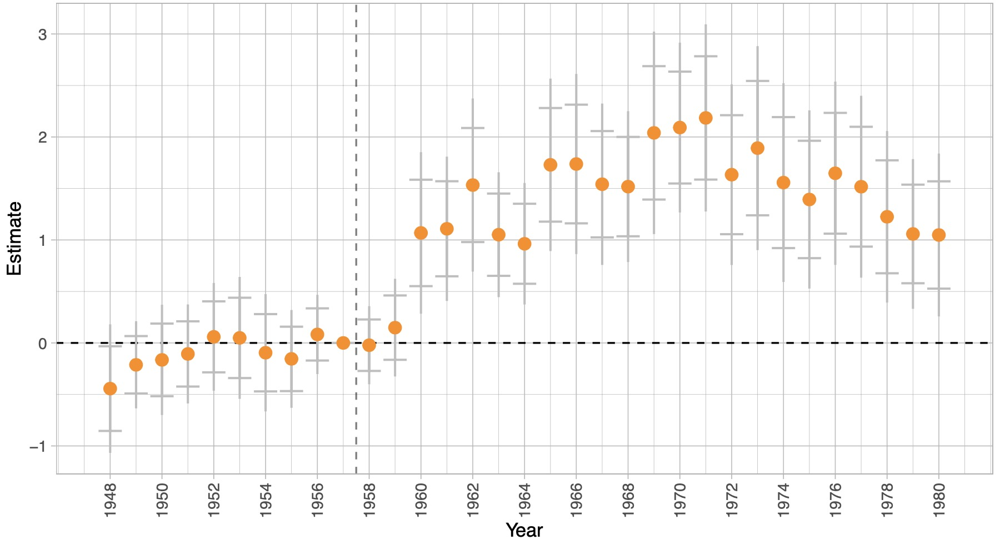
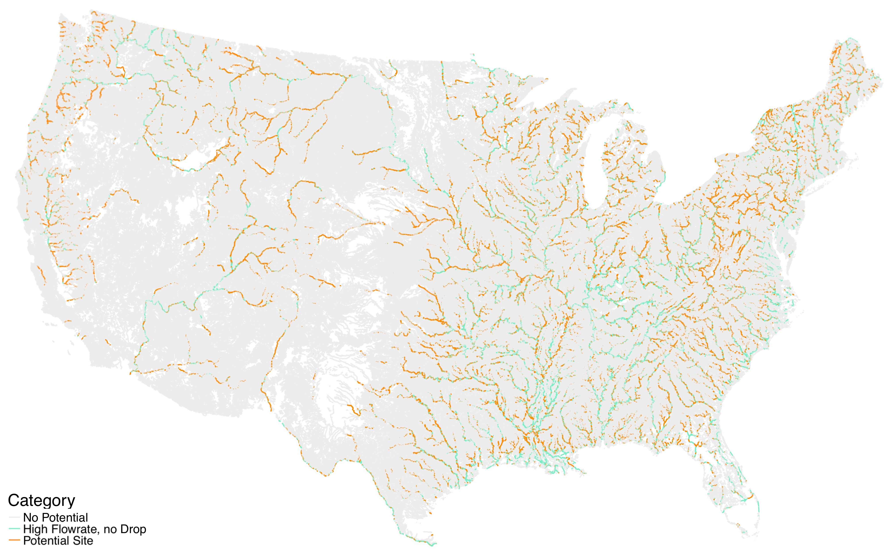
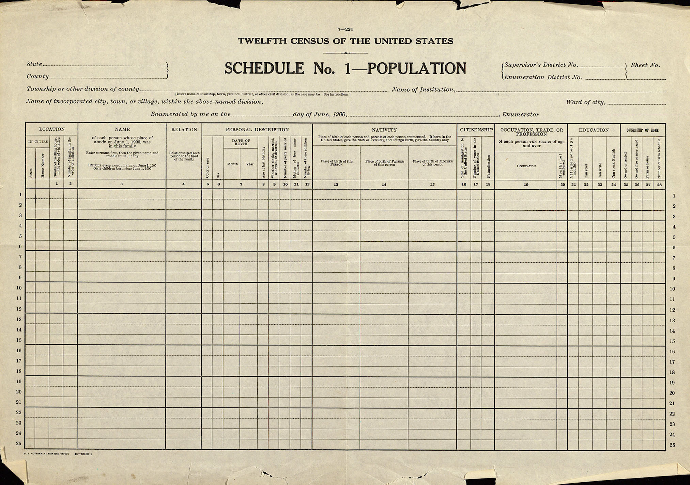

Hi there! I'm an economist and 5th year Ph.D. candidate at the University of Chicago's
Harris School of Public Policy. My fields are in applied microeconomics and economic history, and I
am interested in questions related to technological innovation and probabilistic data linkage.
Before coming to UChicago, I majored in Economics at the Universidad de Costa Rica,
where I am originally from, and was an intern at the UNDP and at UN-ECLAC. Most recently, I interned
at Amazon's Core AI, a centralized team of scientists. Here's my CV.
If you'd like to discuss research or are considering applying to Ph.D. programs in economics or
public policy, feel free to reach out!
My research combines causal inference and big historical data to learn about technological
innovation. My main work discusses how specific government investments in research and development
can lead to innovations with wide ranging applications across the economy. Empirically, I leverage
data on the universe of US patents to study the creation of NASA during the 1960s Space Race using
difference-in-differences and event study models. Relative to comparable fields, I find that the
Space Race increased patenting in spaceflight-related technology fields, that these inventions were
highly influential, and that their influence extended beyond to non-spaceflight technologies.
Patent Count Event Study Estimates, Spaceflight
Classes:

As part of a team with Richard Hornbeck,
Anders Humlum, Martin Rotemberg, and Shanon Hsuan-Ming
Hsu, I have applied supervised learning techniques (random forest, XGBoost) to link patent
data to recently digitized 19th Census manuscripts containing the near-universe of manufacturing
firms. In exploratory work using this novel manufacturing dataset and high resolution National
Hydrography GIS data, we characterized available waterpower for each individual river across the
entire US to study how 19th century firms that depended on waterpower clustered geographically.
Obtaining River Elevation Profiles with NHD and 3DEP
Elevation Data: Mapping Potential Waterpower Sites for Firms:

Historical data allows us to tackle questions that cannot be answered with modern data, but it also
comes with its challenges. Archival records rarely have unique identifiers like Social Security
numbers, so a major part of my research focuses on linking large datasets using machine
learning—training models to find people and firms across different censuses, like a genealogist at
Ancestry would do, but at scale. Such probabilistically linked datasets can lead to biased
estimates, so I have worked on proposing bias-corrected estimators in such cases with Lucas Mation.
Image: National Bureau of Economic Research

Teaching at the University of Chicago
Instructor:
PPHA3011 Coding Lab for Public Policy (with Ari Anisfeld, Fall 2020)
TA:
PPHA34600 Program Evaluation (Fall 2018 - Fall 2021) with Professors Jeffrey Grogger, Kara
Ross-Camarena, Ingvil Gaarder, and Fiona Burlig.
Photography
In my spare time I take pictures, mostly using 35 and 50mm lenses. I also play the guitar and like to
build and fix things with my hands, like sim racing rigs.


{kind=link}
{kind=link}